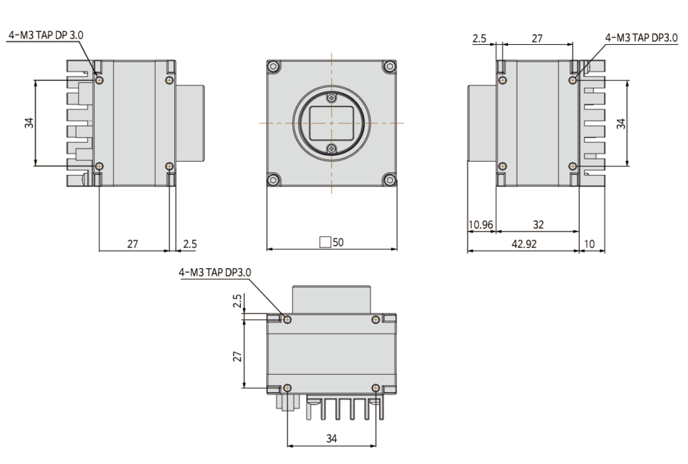
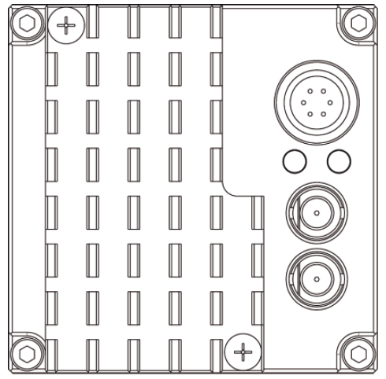
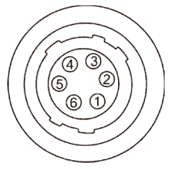

High Speed CoaXPress 2.0 Camera
HX-F251M-75
Gpixel GMAX0505 CMOS | 26.2 MP | Global Shutter

1. Product Overview
The HX-F251M-75 is a cutting-edge high-speed industrial camera optimized for high-throughput inspections. Equipped with the Gpixel GMAX0505 global shutter CMOS sensor, it provides 26.2 megapixel (5120 x 5120) resolution. Utilizing the CoaXPress 12 (CXP-12) 2-channel interface, it achieves a maximum frame rate of 75.3 fps, making it ideal for semiconductor wafer inspection and large-area flat panel display testing.
2. Key Features
Extreme Data Bandwidth
Supports CXP-12 2-channel interface for stable, high-speed data transmission with minimal latency.
High-Resolution CMOS Sensor
The GMAX0505 sensor with 2.5 µm pixels delivers crisp, detailed images for precise metrology.
Simplified System Integration
Equipped with a compact 6-pin connector for power and I/O, supporting streamlined industrial cabling.
Standard Protocol Support
Fully compliant with GenICam and CoaXPress 2.0 standards for seamless interoperability with vision software.
3. Mechanical Dimensions

Figure 1. Mechanical Outline (Unit: 55 x 55 mm footprint)
4. Interface & Pin Map
4.1 Back Panel Layout

Camera Back Panel
| NO. | Name | Remark |
|---|---|---|
| 1 | CoaXPress Connector (Link 1, 2) | Micro-BNC (HD-BNC) |
| 2 | Power & External I/O Connector | 6-Pin Circular |
| 3, 4 | Status LED Indicators | Link/Active status |
4.2 6-Pin Circular Connector Pin Assignment

6-Pin Connector
| No. | Name | I/O | Description |
|---|---|---|---|
| 1 | DC VCC | IN | +12V ~ +24V DC Input |
| 2 | TRIGGER+ | IN | Opto-Isolated Input |
| 3 | STROBE- | OUT | Common Ground (Out) |
| 4 | STROBE+ | OUT | Opto-Isolated Output |
| 5 | TRIGGER- | IN | Common Ground (In) |
| 6 | DC GND | IN | Power Ground |
5. LED Status Indicators
| LED Position | Color / Behavior | Status Description |
|---|---|---|
| Left LED (Link) | Solid Red | Link disconnected or hardware error |
| Solid Green | CXP link established successfully | |
| Right LED (Status) | Off | Initialization complete / Waiting for Acquisition |
| Solid Green | Waiting for Trigger input | |
| Flashing Green | Image data transferring |
6. Specifications
6.1 Performance Specifications
| Sensor Model | Gpixel GMAX0505 |
|---|---|
| Sensor Type | CMOS Global Shutter |
| Resolution | 5120 (H) x 5120 (V) (26.2 MP) |
| Pixel Size / Format | 2.5 µm x 2.5 µm / 1.1" |
| Frame Rate (Max.) | 75.3 fps |
| Exposure Time | 1 µs ~ 1 sec |
| Gain Control | 0 ~ 24 dB |
| Data Interface | CoaXPress 12 2ch |
6.2 Electrical & Environmental
| Power Supply | DC 12V ~ 24V (±10%) or PoCXP |
|---|---|
| Power Consumption | Typical < 12.0 W |
| Operating Temp. | 0°C ~ +45°C (Case temperature) |
| Compliance | CE, FCC, RoHS, KC |
| IP rating | IP30 |
7. Warranty
3-Year Premium Warranty:
Crevis warrants the HX-F251M-75 for long-term industrial reliability.